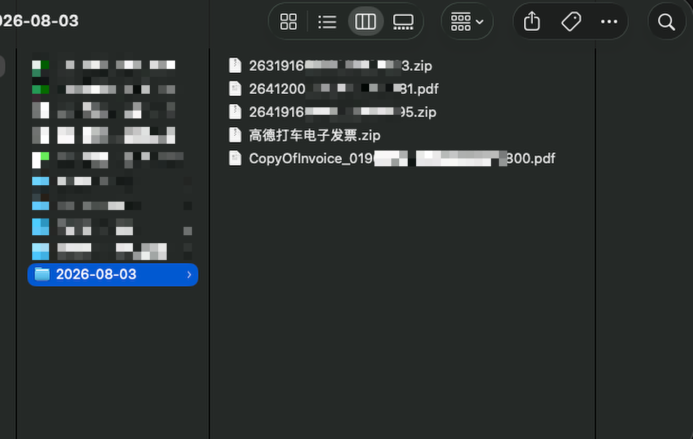
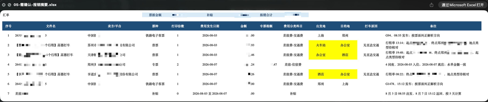
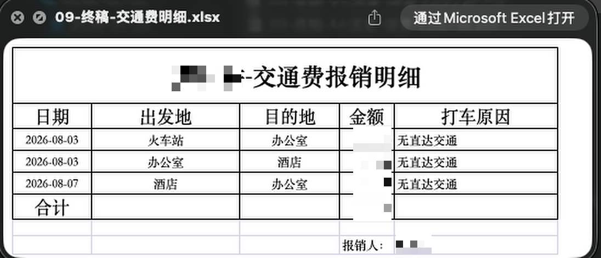
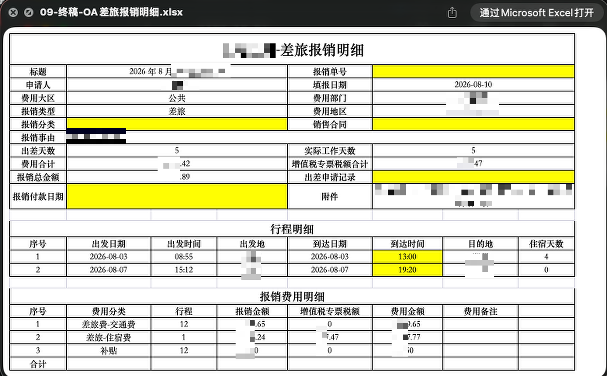
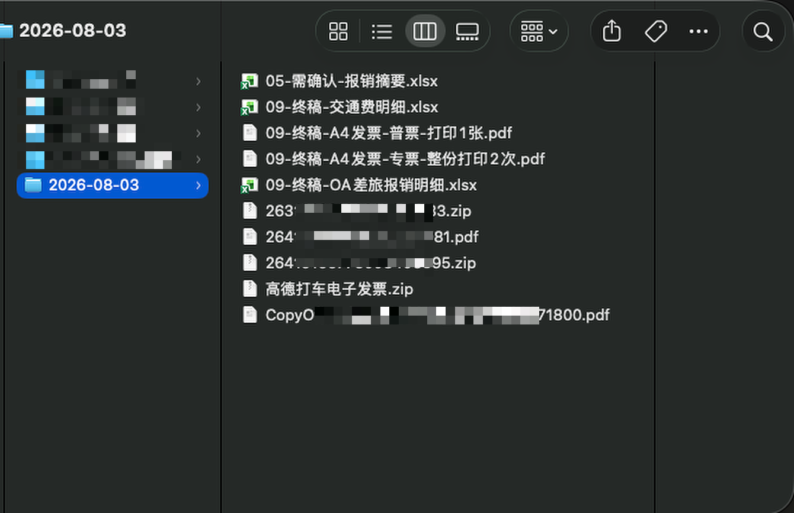
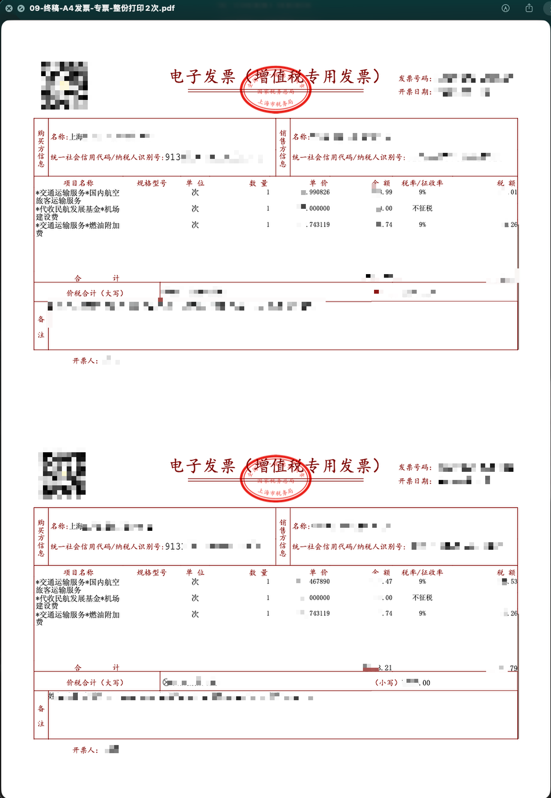

发票材料
电子发票 PDF/XML、发票压缩包、铁路电子客票等。
01
把本次报销的原始材料放在同一个文件夹中。
电子发票 PDF/XML、发票压缩包、铁路电子客票等。
行程单、住宿水单、订阅回执、费用明细等。
付款截图、银行卡扣款记录或其他金额依据。
跨城出行、住宿、出差期间交通和补贴归入差旅。AI 订阅、市内交通、办公费用等不需要行程的费用归入其他报销。

02
说清报销类型、材料文件夹和本次实际报销人。
差旅报销
帮我处理差旅报销，材料在这个文件夹：文件夹路径，报销人是实际报销人姓名。
其他报销
帮我处理其他报销，材料在这个文件夹：文件夹路径，报销人是实际报销人姓名。
如果没有说报销类型或报销人，我会先询问，确认后再处理。
03
我会读取票据和附件，核对金额、税额、票种、费用分类及日期。
识别发票、行程、住宿、支付凭证等文件。
归集金额、税额、发生日期、费用分类和起止地点。
不确定内容标黄，不可报销内容标红，并说明需要确认的地方。
04
打开 05-需确认-报销摘要.xlsx，直接修改需要调整的内容。

05
我会重新读取你确认后的摘要，再生成本次报销需要的文件。
09-终稿-OA差旅报销明细.xlsx
09-终稿-交通费明细.xlsx
交通费明细仅在存在对应打车明细时生成。
09-终稿-OA报销金额明细.xlsx
其他报销不生成差旅行程和交通费明细。
09-终稿-A4发票-普票-打印1张.pdf
09-终稿-A4发票-专票及高铁票-整份打印2次.pdf
高铁票准备两份：一份粘贴，一份随报销单交财务。没有对应票种时，不生成空 PDF。




06
使用 Chrome 插件读取 OA 终稿 Excel，将内容填入 OA 技术报销页。